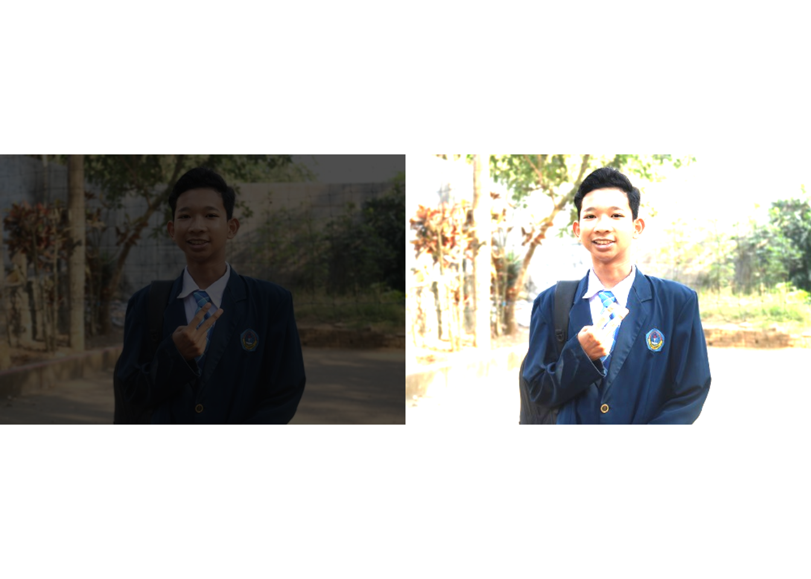
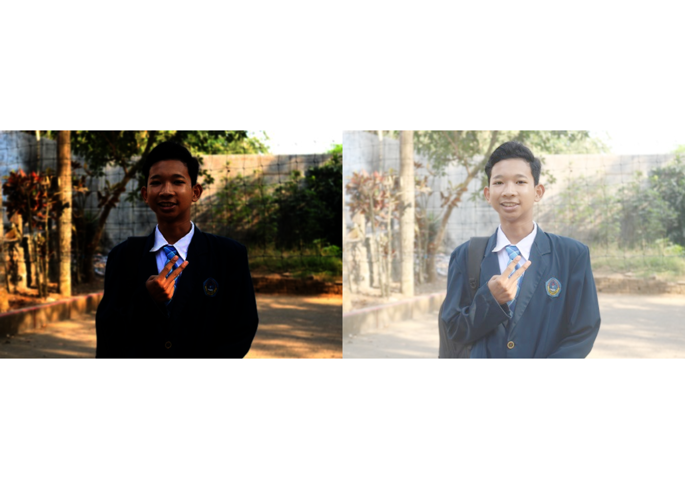
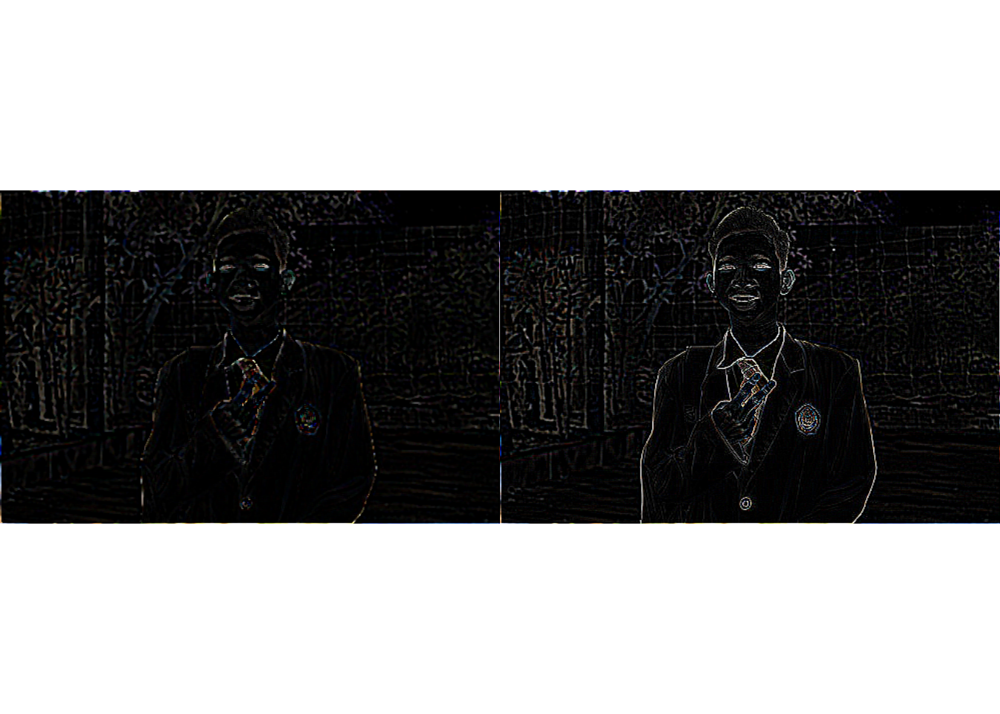

Cara Konversi Gambar Dengan EBImage
@Naufal Bakhtiar Ismail - Teknik Informatika UIN Maulana Malik Ibrahim - Dosen Pengampu: @Prof. Dr. SUHARTONO, M.Kom
21 Maret 2021
Set Lokasi Kerja
pada saat mengatur lokasi kerja anda harus sesuaikan dan ubah miring nya. Karena default dari windows akan muncul seperti ini
(D:Family_0789 Cool)
jika dirun akan menghasilkan error seperti ini
(Error: ‘∖ M’ is an unrecognized escape in character string starting ““D:∖ M”)
maka dari itu ditulis seperti dibawah ini
setwd("D:/MULTIMEDIA/A Family/Me")Install Package
pada saat memanggil EBImage diharuskan sebelumnya untuk menginstall package EBImage agar program berjalan dengan normal. Berikut caranya
if (!requireNamespace("BiocManager", quietly = TRUE))
install.packages("BiocManager")
BiocManager::install("EBImage")Memanggil Package
Jika sudah menginstall EBImage kalian dapat memanggil package tersebut dengan
library(EBImage)## Warning: package 'EBImage' was built under R version 4.0.3Sumber Gambar
Jika sudah menginstall EBImage kalian dapat memanggil package tersebut dengan
setwd("D:/MULTIMEDIA/A Family/Me")
library(EBImage)
Image <- readImage('IMG_0789 Cool RStudio.jpg')
display(Image)
print(Image)## Image
## colorMode : Color
## storage.mode : double
## dim : 500 333 3
## frames.total : 3
## frames.render: 1
##
## imageData(object)[1:5,1:6,1]
## [,1] [,2] [,3] [,4] [,5] [,6]
## [1,] 0.9215686 0.9098039 0.8901961 0.8666667 0.8313725 0.8235294
## [2,] 0.9098039 0.8980392 0.8823529 0.8627451 0.8352941 0.8235294
## [3,] 0.8862745 0.8745098 0.8627451 0.8509804 0.8274510 0.8274510
## [4,] 0.8549020 0.8509804 0.8431373 0.8196078 0.8000000 0.8078431
## [5,] 0.8627451 0.8431373 0.8235294 0.7921569 0.7764706 0.8000000Mengatur Brightness
pada opsi ini akan mengatur tingkat kecerahan pada gambar yang kita panggil. dengan simbol +/-
setwd("D:/MULTIMEDIA/A Family/Me")
library(EBImage)
Image1 <- Image + 0.4
Image2 <- Image - 0.4
par(mfrow= c(1,2))
plot(Image1)
plot(Image2)
Mengatur Contrast
pada opsi ini gambar akan di ubah kontrasnya. hanya saja di sini menggunakan simbol sama dengan (=) secara default gambar bernilai 1.
setwd("D:/MULTIMEDIA/A Family/Me")
library(EBImage)
Image3 <- Image * 0.3
Image4 <- Image * 2
par(mfrow= c(1,2))
plot(Image3)
plot(Image4)
Mengatur Gamma Correction
pada opsi ini image akan di ubah gammanya. untuk caranya sama seperti kontras namun untuk gama menggunakan ^
setwd("D:/MULTIMEDIA/A Family/Me")
library(EBImage)
Image5 <- Image ^ 3
Image6 <- Image ^ 0.5
par(mfrow= c(1,2.1))
plot(Image5)
plot(Image6)Memotong Gambar (Cropping)
pada opsi ini akan memotong gambar yang kita panggil. Dengan cara seperti di bawah ini
setwd("D:/MULTIMEDIA/A Family/Me")
library(EBImage)
display(Image[50:300,0:250,])
Spatial Transformation
pada opsi ini image akan di setting rotasinya. sesuai value yang ada di Imagetr <- translate(rotate(Image, 60), c(45, 0))
setwd("D:/MULTIMEDIA/A Family/Me")
library(EBImage)
Imagetr <- translate(rotate(Image, 60), c(45, 0))
display(Imagetr)
Color Management
pada opsi ini untuk color management akan di lakukan untuk mengubah karakter warna seperti di contoh menggunakan gray scale untuk menampilkan warna abu-abu. dengan efek ini akan menampikan gambar seperti di bawah ini.
setwd("D:/MULTIMEDIA/A Family/Me")
library(EBImage)
colorMode(Image) <- Grayscale
display(Image)## Only the first frame of the image stack is displayed.
## To display all frames use 'all = TRUE'.print(Image)## Image
## colorMode : Grayscale
## storage.mode : double
## dim : 500 333 3
## frames.total : 3
## frames.render: 3
##
## imageData(object)[1:5,1:6,1]
## [,1] [,2] [,3] [,4] [,5] [,6]
## [1,] 0.9215686 0.9098039 0.8901961 0.8666667 0.8313725 0.8235294
## [2,] 0.9098039 0.8980392 0.8823529 0.8627451 0.8352941 0.8235294
## [3,] 0.8862745 0.8745098 0.8627451 0.8509804 0.8274510 0.8274510
## [4,] 0.8549020 0.8509804 0.8431373 0.8196078 0.8000000 0.8078431
## [5,] 0.8627451 0.8431373 0.8235294 0.7921569 0.7764706 0.8000000colorMode(Image) <- Color
display(Image)
Memberi Filter
pada opsi ini untuk filtering merupakan cara yang di bilang paling panjang dan berat untuk di jalankan. namun dengan filter akan berdampak sangat besar pada gambar. untuk hasil dan caranya seperti berikut.
setwd("D:/MULTIMEDIA/A Family/Me")
library(EBImage)
fLow <- makeBrush(21, shape= 'disc', step=FALSE)^2
fLow <- fLow/sum(fLow)
Image.fLow <- filter2(Image, fLow)
display(Image.fLow)
fHigh <- matrix(1, nc = 3, nr = 3)
fHigh[2, 2] <- -8
Image.fHigh <- filter2(Image, fHigh)
display(Image.fHigh)
ow<- medianFilter(Image.fHigh,1.1)
par(mfrow= c(1,2))
plot(ow)
plot(Image.fHigh)
Image <- readImage("IMG_0789 Cool RStudio.jpg")
medFltr <- medianFilter(Image, 1.1)
display(medFltr)